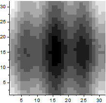
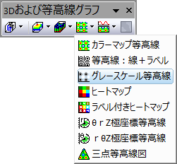

グレースケール等高線図
Contour-GrayScaleMap
- 
必要なデータ
- 少なくとも1つのZ列（あるいは、その部分領域）を選択します。Z列と関連するXY列がある場合、そのXY列が使われます。そうでない場合、ワークシートのデフォルトのXY値が使われます。
- または、
または、
- 行列：1つの行列シートオブジェクトが複数含まれるシートもサポートされています。
または、
- イメージ：1つのイメージウィンドウフレームが複数含まれるイメージもサポートされています。すべてのフレームをめくる方法については、以下のこのページを参照してください。
グラフ作成
行列シート/イメージウィンドウをアクティブにするか必要なデータをワークシート上で選択します。
メニューから「」を選択します。
または
「3Dおよび等高線グラフ」ツールバーのグレースケール等高線ボタンをクリックします。
- 
テンプレート
ワークシート
行列/イメージ
(Originのプログラムフォルダにインストールされています。)
Notes
ワークシートからの等高線図はユーザ定義の境界をサポートします。等高線の境界をセットするには、作図の詳細ダイアログボックスを開き、等高線設定タブを使用します。